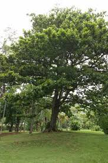
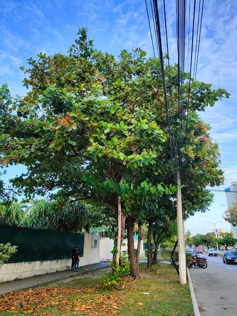

Hojas
Sus hojas son simples, grandes, anchas y de forma ovalada. Se agrupan principalmente en los extremos de las ramas. Antes de caer pueden adquirir tonalidades amarillas, anaranjadas o rojizas.

COBACH · PLANTEL 240 · CHIAPA DE CORZO
Conociendo el árbol de almendro malabar
El almendro malabar es un árbol tropical conocido por sus grandes hojas, su copa extendida y sus frutos. Se utiliza como árbol ornamental en parques, jardines y espacios de las comunidades.
En este proyecto conoceremos sus características botánicas, su lugar de origen, su distribución geográfica y algunos de sus usos.

Nombre común: Almendro malabar.
Nombre científico: Terminalia catappa.
Familia botánica: Combretaceae.
Sus hojas son simples, grandes, anchas y de forma ovalada. Se agrupan principalmente en los extremos de las ramas. Antes de caer pueden adquirir tonalidades amarillas, anaranjadas o rojizas.
Las hojas pueden cambiar de color antes de caer. Este cambio produce tonos rojizos y anaranjados que hacen que el árbol sea llamativo en ciertas temporadas.

El tronco suele ser recto y su corteza presenta tonos grises o marrones. El árbol desarrolla una estructura fuerte que sostiene sus ramas y su amplia copa.

Sus ramas crecen de forma extendida y pueden organizarse en niveles. La copa amplia permite que el árbol proporcione sombra en los lugares donde crece.

Sus frutos son ovalados y carnosos. Al madurar pueden cambiar de verde a amarillo, rojo o morado. En su interior contienen una semilla protegida por una cubierta dura.

Las semillas se encuentran dentro de los frutos y están protegidas por una cubierta dura. Pueden utilizarse para la reproducción del árbol mediante germinación.

Las raíces sostienen el árbol y absorben agua y nutrientes del suelo. Su crecimiento depende de las condiciones del terreno y del espacio disponible.

Puede alcanzar aproximadamente entre 15 y 25 metros en condiciones favorables, aunque su tamaño varía según el clima y el ambiente.
Es un árbol perenne que puede vivir varias décadas. Su longevidad depende de las condiciones ambientales, el suelo y los cuidados que recibe.
El almendro malabar, cuyo nombre científico es Terminalia catappa, es originario de regiones tropicales de Asia y del área del Indo-Pacífico. Posteriormente se extendió y cultivó en otras regiones tropicales del mundo.

Paisaje tropical relacionado con el ambiente donde pueden desarrollarse árboles de regiones cálidas.
Actualmente se cultiva y se encuentra naturalizado en diversas regiones tropicales de Asia, África, América y las islas del Pacífico. En México puede crecer en zonas cálidas, donde se planta en jardines, parques y espacios urbanos.
Su desarrollo depende de factores como la temperatura, la disponibilidad de agua y las características del suelo.
Su copa extendida ayuda a proporcionar sombra en patios, jardines, parques y espacios públicos.
Se planta en calles y jardines por su forma, su follaje y los cambios de color de sus hojas.
En algunas regiones se consume la parte comestible de sus semillas. Es importante identificar correctamente la especie y evitar consumir partes desconocidas.
Sus hojas, frutos y semillas pueden utilizarse en algunas actividades decorativas y artesanales.
Forma parte de las áreas verdes y puede ofrecer refugio a pequeños animales.
Los usos tradicionales no sustituyen los tratamientos médicos ni demuestran por sí solos que una planta cure enfermedades.
Los árboles ayudan a conservar las áreas verdes, proporcionan sombra y contribuyen al paisaje de las comunidades. Conocer el almendro malabar nos permite identificar sus características y valorar la importancia de cuidar las plantas de nuestro entorno.
Imágenes complementarias del proyecto.
